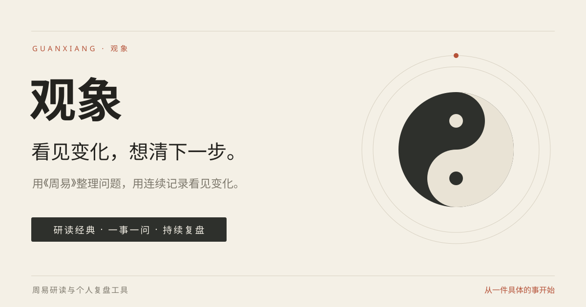

用《周易》整理问题，用连续记录看见变化。把一次占问，变成一段有行动、有反馈的个人记录。

一套稳定的视觉语言
先讲好这三个故事
用一段真实操作，解释怎样写清情境、目标和时间范围。让用户看完就能开始。
展示面试准备到反馈的虚构示例，分别看问题、理解和现实进展的变化。
当时如何理解，接下来准备做什么，下次回来要验证什么。
推荐的产品介绍
观象是一款周易研读与个人复盘工具。你可以保留每次占问的解读与行动，在新的进展出现后，回到同一件事，借助 AI 对照历次记录。
这是品牌与传播方案预览。素材没有代替你发送到任何平台；正式推广前的账号、容量、反馈和数据说明待办见完整方案。